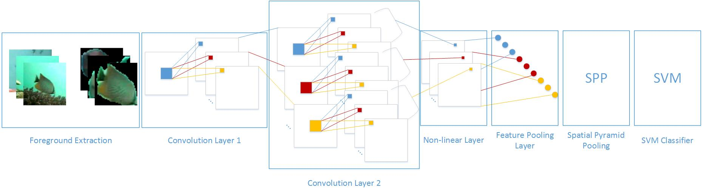
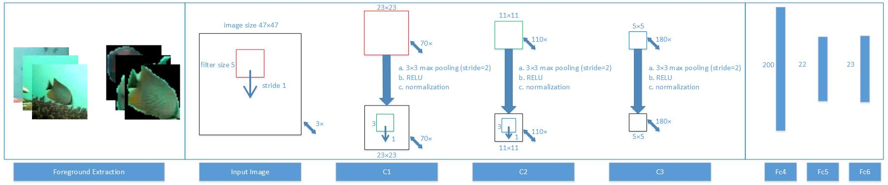

Hongwei Qin, Xiu Li, Jian Liang, Yigang Peng and Changshui Zhang

Fig. 1. Cascaded network, accuracy 98.64%

Fig. 2. CNN, accuracy 98.57%
Underwater object recognition is in great demand, while the research is far from enough. The unrestricted natural environment makes it a challenging task. We propose a framework to recognize fish from videos captured by underwater cameras deployed in the ocean observation network. First, we extract the foreground via sparse and low-rank matrix decomposition. Then, a deep architecture is used to extract features of the foreground fish images. In this architecture, principal component analysis (PCA) is used in two convolutional layers, followed by binary hashing in the non-linear layer and block-wise histograms in the feature pooling layer. Then spatial pyramid pooling (SPP) is used to extract information invariant to large poses. Finally, a linear SVM classifier is used for the classification. This deep network model can be trained efficiently. On a real-world fish recognition dataset, we achieve the state-of-the-art accuracy of 98.64%.